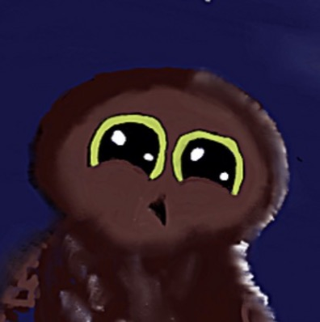
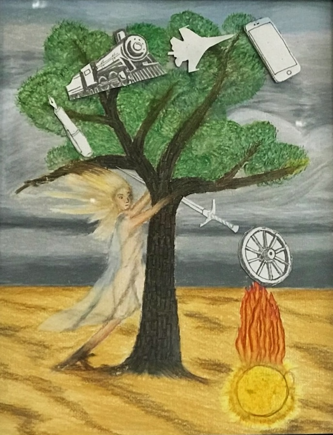
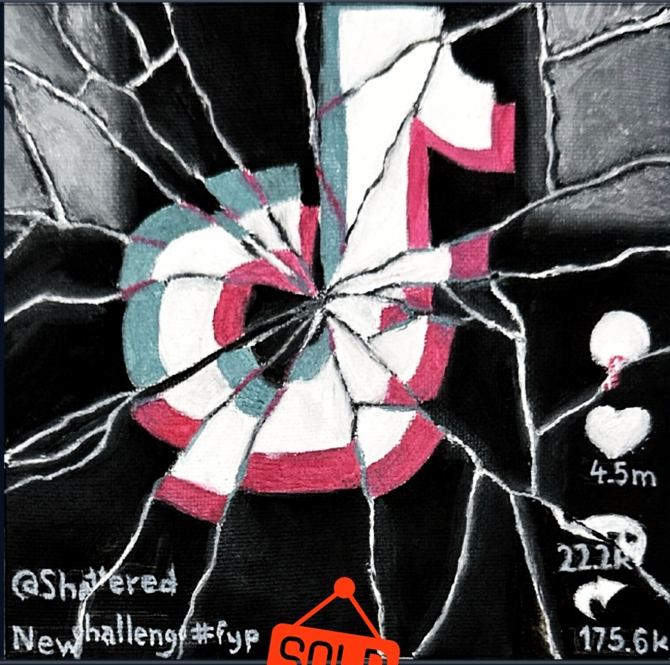
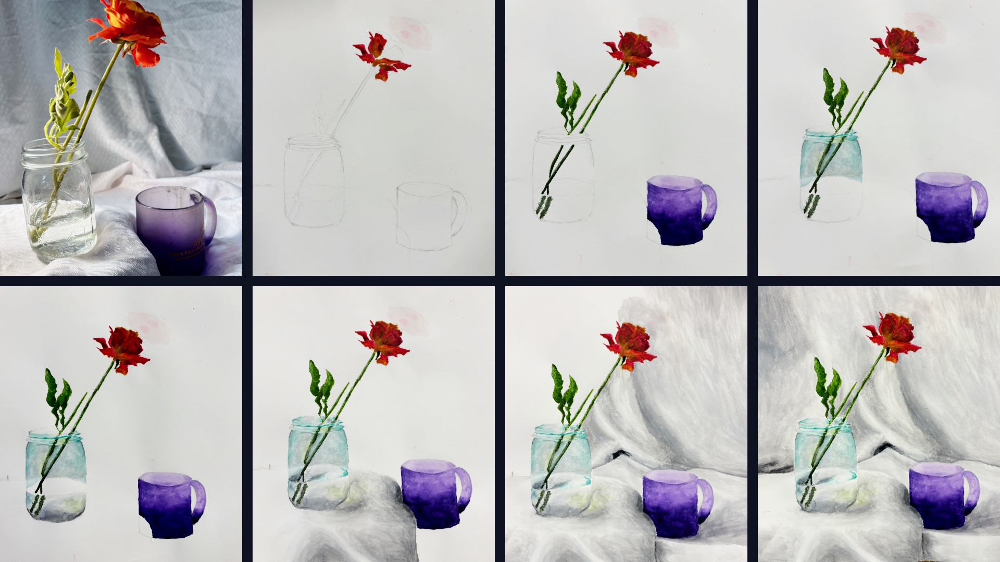
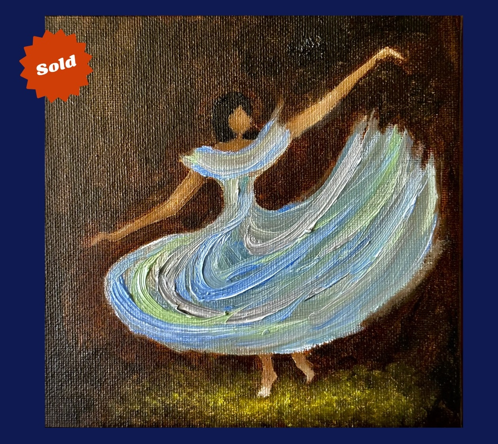
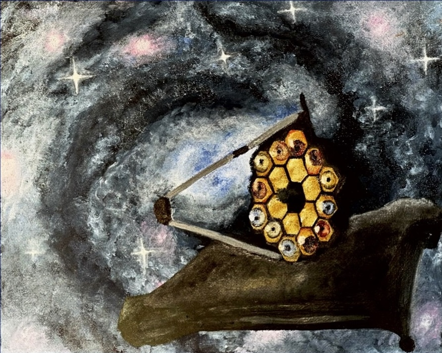

Baby Owl Go to Project →
Acquisition of Powervs. Purity Go to Project →

Shattered Go to Project →
Still Life(Water Color) Go to Project →
in Color Go to Project →

Dance Go to Project →
Cosmic Gaze Go to Project →